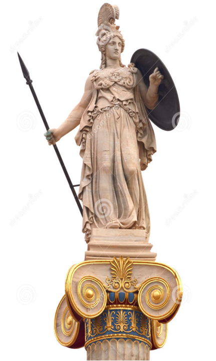

Trong số các vị thần của thế giới Olympe thì nữ thần Athéna ra đời thần kỳ hơn cả. Đối với các vị thần thì đương nhiên sự ra đời phải khác thường, phải thần kỳ rồi. Nhưng Athéna thần kỳ hơn, khác thường hơn. Nàng không phải do mẹ sinh ra mà do bố sinh ra, và sinh ra từ... đầu! Thần Zeus lấy nữ thần Métis, một Titanide con của Okéanos và nữ thần Téthys. Theo người xưa kể thì chính Métis mới là người vợ đầu tiên của Zeus chứ không phải Héra. Métis là người đã nói cho biết thứ lá cây thần diệu và bí hiểm để Zeus lấy về cho Cronos uống, nhờ thế nên Cronos mới nôn mửa ra hết những anh chị em của Zeus bị nuốt từ khi mới ra đời.

Đứa con đầu lòng của họ là một bé gái. Ngày sắp sinh đứa con thứ hai thì một lời sấm ngôn của nữ thần Đất mẹ-Gaia truyền cho họ biết, đứa con này sẽ là con trai và lớn lên nó sẽ mạnh hơn bố nó. Nó sẽ truất ngôi bố và tranh giành lấy quyền cai quản thế giới Olympe và thế giới loài người. Zeus rất đỗi lo sợ về lời sấm truyền đó. Thần nghĩ cách đối phó lại. Và có lẽ cách tốt nhất theo thần nghĩ, là bắt chước Cronos: Nuốt! Zeus nghĩ thế và nuốt luôn người vợ đang bụng mang dạ chửa của mình. Ít ngày sau Zeus mắc chứng đau đầu rất dữ, đau từng cơn ong ong lục ục trong đầu. Trong một cơn đau muốn nổ tung bộ óc, Zeus gọi đứa con què Héphaïstos lại và ra lệnh: “Lấy búa bổ vào đầu ta ngay, làm ngay đi...” Héphaïstos còn do dự trước cái lệnh kỳ quái đó nhưng Zeus trừng mắt, quát: “Bổ đi! Làm ngay không chết bây giờ!” Thế là Héphaïstos phải tuân theo lời Zeus. Chàng nâng cây búa nặng ngàn cân lên dùng hết sức bình sinh giáng vào đầu Zeus. Chát một cái! Héphaïstos nhắm mắt lại, rùng mình. Sọ của Zeus nứt toác ra và từ kẽ nứt nhảy ra ngoài một người thiếu nữ nhung y, võ phục gọn gàng, tay kiếm tay cung, mắt sáng như gương, tiếng to như sấm. Vừa nhảy ra khỏi đầu Zeus, nàng liền hét lên một tiếng vang động cả đất trời như khi xung trận. Đó là Athéna, vị nữ thần Trí tuệ, Tri thức và Chiến trận. Athéna đội mũ đồng sáng loáng, mặc áo dài, đứng uy nghi oai phong lẫm liệt như một vị nam thần. Vì là nữ thần của Trí tuệ, Tri thức nên Athéna sáng tạo ra biết bao nhiêu điều để dạy con dân Hy Lạp. Nàng đã ban cho người trần thế cái cày và cái bừa để họ có thể làm ruộng, trồng lúa, trồng nho. Nàng trao cho những người phụ nữ cái xa quay sợi và khung cửi dệt. Nàng dạy cho họ nghề dệt khéo léo và công phu để họ có thể dệt nên những tấm vải dày, mỏng tùy theo ý thích, màu sắc rực rỡ như lòng họ mong muốn. Vì thế người xưa còn gọi nàng là “Athéna Ergana” nghĩa là “Athéna Thợ giỏi”97, vị nữ thần bảo hộ cho nghề thủ công. Nàng còn là người đặt ra các thiết chế, luật pháp cho các đô thị để con người biết cách cai quản điều hành cuộc sống của mình được trật tự và công bằng. Vì là nữ thần Trí tuệ, Tri thức nên nàng phải được Zeus sinh ra từ... đầu, hay cũng vì sinh từ đầu Zeus mà nàng phải là vị nữ thần của Trí tuệ, Tri thức.
Do đó, một chức năng nữa mà Athéna phải đảm nhận là bảo đảm cho khoa học và kỹ thuật trong các đô thị sao cho được phát triển rực rỡ, phục vụ hữu hiệu cho con người. Từ tất cả những công việc ấy Athéna được gọi là vị nữ thần bảo hộ cho đô thị: Athéna Poliade98.
Trong gia tài thần thoại Hy Lạp có một số các vị thần ngoài tên chính còn nhiều biệt danh kèm theo như: Apollon Phébus, Artémis Tauropolos, Athéna Pallas... mà khoa thần thoại học gọi là “Các thần có biệt danh”99. Sự xuất hiện những biệt danh đó gắn liền với một hoàn cảnh lịch sử cụ thể: các công xã thị tộc Hy Lạp dần dần thống nhất lại với nhau và từ đó nảy ra khuynh hướng tập trung những nghi lễ, tập tục thờ cúng. Đương nhiên quá trình này không phải diễn biến theo một con đường thẳng tắp. Một mặt nó dẫn đến kết quả như ta vẫn thường thấy trong việc nhân hình hóa nhân cách hóa những hiện tượng tự nhiên và xã hội vào trong một số vị thần gần như có quyền lực ngang nhau và có những chức năng tương tự như nhau, giống nhau. Hélios-Thần Mặt trời với Apollon-Thần Ánh sáng; Séléné-Nữ thần Mặt trăng với Artémis-Nữ thần Mặt trăng. Đã có nữ thần Héra và nữ thần Ilithyie trông coi và bảo hộ cho hạnh phúc gia đình, sự sinh nở, việc hộ sinh, lại thêm cho Artémis những chức năng tương tự như thế, v.v. Lại có khi hai chiều hướng phát triển nói trên hợp nhất lại và xuất hiện một vị thần thống nhất. Những vị thần tồn tại độc lập, không quan trọng, ít ý nghĩa đối với đời sống xã hội cụ thể dần dần lui bước khỏi “vũ đài” thần thoại và nhường tên nó lại cho vị khác, vị thần của công xã chiến thắng. Và ngọn cờ chiến thắng chính là biệt danh cắm vào với cái tên vốn có của vị thần được lịch sử xã hội “phù hộ”.
Athéna thường có một biệt danh quen thuộc là Pallas. Người xưa giải thích, sở dĩ nàng có biệt danh này là do nàng đã đánh bại được tên khổng lồ Pallas trong một cuộc giao tranh ác liệt. Để ghi nhớ chiến công hiển hách của mình, Athéna lột da địch thủ căng lên tấm khiên. Có chuyện lại kể, Pallas không phải là một tên khổng lồ đã bị đánh bại trong cuộc giao tranh giữa các thần và những tên Gigantos-Đại khổng lồ. Pallas là một thiếu nữ, con vị thần biển Triton. Athéna chẳng hiểu vì một chuyện gì đã vô tình gây ra cái chết của Pallas. Để bày tỏ tấm lòng thương tiếc và hối hận đối với cái chết của người con gái bất hạnh, Athéna lấy da của Pallas lợp lên chiếc khiên của mình và ghép tên nàng vào với tên mình.
Ngoài biệt danh Pallas, Athéna còn có những biệt danh như Promachos100 hoặc Tritogénia101 và đôi khi là Hygia102. Athéna tham dự vào khá nhiều chuyện của thế giới thiên đình và thế giới loài người. Đối với người Hy Lạp cổ xưa, Athéna là vị nữ thần đã đem lại cho họ một cuộc sống văn minh hơn. Nàng là vị nữ thần của Trí tuệ, Tri thức. Nàng là ánh sáng của khoa học, kỹ thuật, văn hóa, nghệ thuật chiếu rọi xuống đời sống tối tăm của con người. Nàng còn là vị nữ thần của chiến trận, chiến thắng. Athènes, một trung tâm kinh tế, chính trị, văn hóa của thế giới Hy Lạp ngày xưa và thủ đô của nước Hy Lạp ngày nay, là đô thị mang tên nữ thần Athéna và được nữ thần Athéna bảo hộ. Con vật gắn bó với nữ thần Athéna, một dấu vết về tiền sử tôtem của nữ thần, là con cú mèo. Vì thế nữ thần thường có những định ngữ kèm theo: Athéna có đôi mắt cú mèo, Athéna có đôi mắt xanh lục... Ngày nay trong văn học các nước phương Tây cái tên Athéna hoặc Minerve có một nghĩa bóng là “người đàn bà thông minh”, “người phụ nữ tri thức”, “thông tuệ”. Từ đó Con cú của nữ thần Athéna cũng tượng trưng cho sự hiểu biết, tri thức, sự thông minh, thông tuệ103.
Lại nói về chuyện thần Zeus đẻ nữ thần Athéna. Đây là một sự tức khí của Zeus. Thần Zeus muốn chứng tỏ cho thế giới Olympe biết, và nhất là cho Héra biết rằng không phải chỉ có đàn bà mới đẻ được, mới sinh con cái được. Đàn ông cũng đẻ được chứ đừng tưởng chỉ riêng có đàn bà, đừng có lấy thế mà tỏ vẻ lên mặt, vênh váo! Tại sao lại có chuyện tức khí như vậy? Đó là, dễ hiểu thôi, xã hội đã chuyển biến sang thời kỳ thị tộc phụ quyền vì thế mới xuất hiện loại huyền thoại hạ uy thế của người phụ nữ!
[97] Tiếng Hy Lạp ergon: lao động; dịch sát nghĩa là “người lao động”.
[98] Polias xuất phát từ tiếng Hy Lạp polis: đô thị.
[99] Tiếng Hy Lạp Epikloros, chỉ một tên thêm của người bố đặt cho con gái trong trường hợp không có con trai để thay quyền quản lý tài sản ở Hy Lạp xưa kia.
[100] Tiếng Hy Lạp promachos: người nữ chiến binh.
[101] Tritogénia: hồ Tritonis, nơi nữ thần Athéna ra đời.
[102] Tiếng Hy Lạp hygia: sức khỏe.
[103] Rimer malgré Minerve: làm thơ bất cần nữ thần Minerve, bất cần trí tuệ, tri thức. La chonette de Minerve ne prend son vol qu’en crépescule: Con cú của nữ thần Minerve chỉ tay vào lúc trời đã tối (buổi hoàng hôn): tri thức, sự hiểu biết, sự thông minh, sáng tạo là kết quả của một quá trình tích lũy.